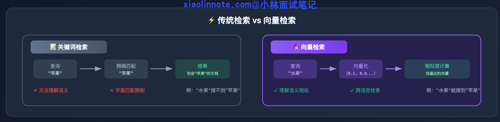
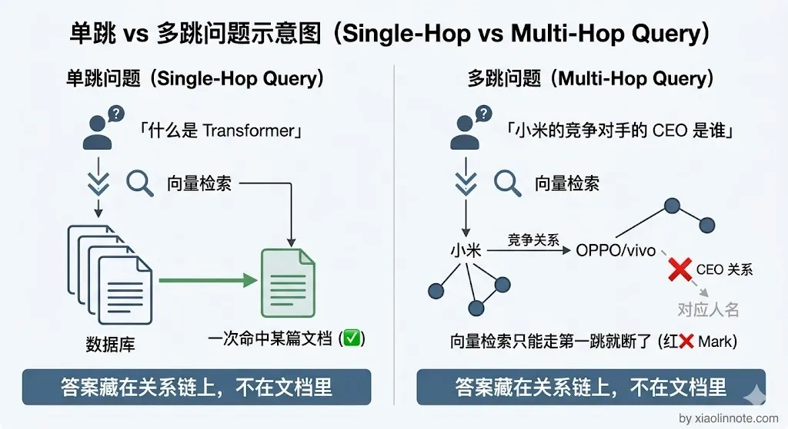
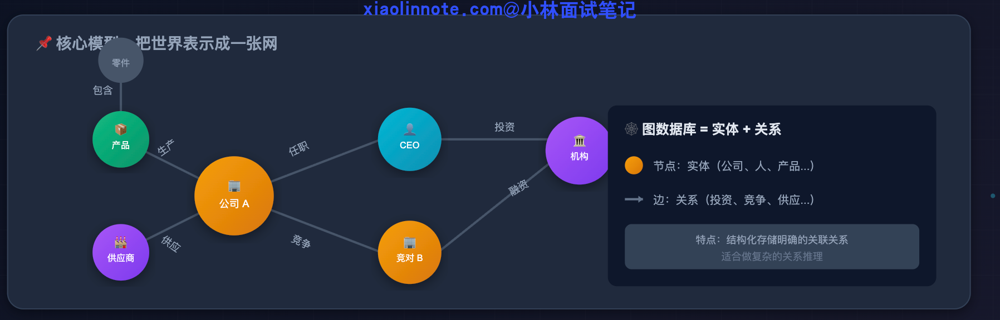
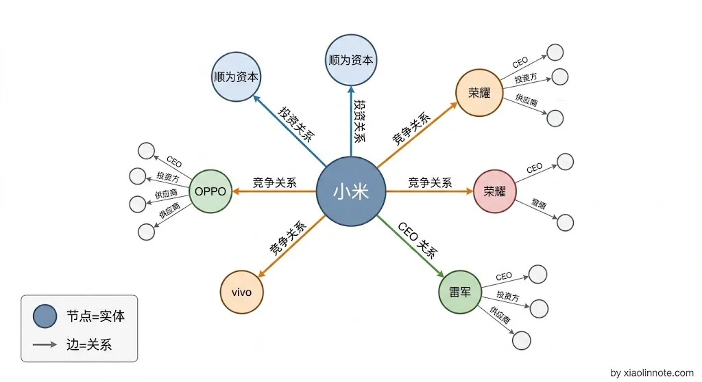
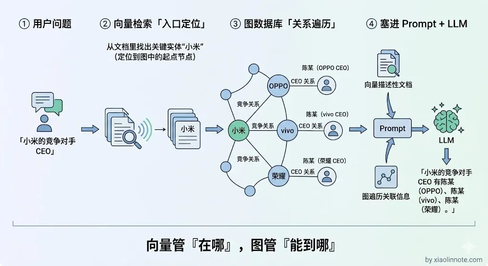
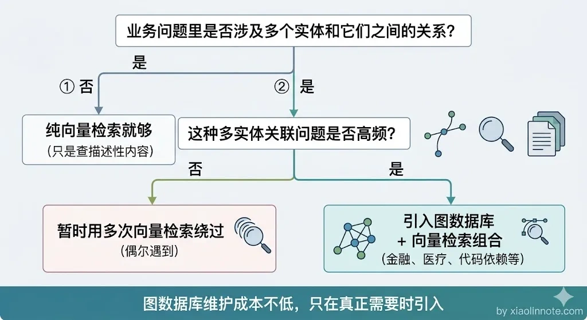

在什么场景下，你会选择使用图数据库来增强传统的向量检索？
👔面试官：在什么场景下，你会选择使用图数据库来增强传统的向量检索？
🙋♂️我：图数据库？我觉得向量检索已经够用了吧，大部分场景都能覆盖，图数据库主要是搞社交网络那种，和 RAG 关系不大。
👔面试官：向量检索只能做单跳检索，找不到多个实体之间的关联关系。用户问「A 公司的投资方和 B 公司有什么交集」，你用向量检索试试看？
🙋♂️我：呃，那我可能会多检索几次，把关键词拆开分别搜，应该也能拼出答案吧？
👔面试官：多检索几次？你连实体之间的边在哪都不知道，怎么跳？图数据库就是专门解决多跳关系推理的，向量检索根本做不到。你对这两种技术的互补关系完全没有理解。
这个问题考察的是你对向量检索能力边界的认知，以及图数据库在什么场景下能补上这个短板。下面我来详细分析。
💡 简要回答
我的判断是，当业务问题涉及多个实体之间的关联推理的时候，就需要考虑引入图数据库来增强。
向量检索有一个根本的局限，它只能做单跳检索，找和问题直接相关的文档，没办法沿着实体之间的关系链做推理。比如你问公司 A 的投资方和公司 B 有什么交集，单纯向量检索就很难处理了，因为答案不在某一段文档里，而是藏在多个节点之间的关系上。
这时候图数据库就能发挥作用，沿着关系边一跳一跳地把关联信息收集回来。我接触过的典型场景有企业关系分析、医疗知识图谱、代码依赖关系查询、供应链溯源这些。
📝 详细解析
向量检索能做什么，做不到什么
先从向量检索的工作原理说起。向量检索做的事情是：把用户的问题转成一个向量，然后在知识库里找「向量最接近」的文档片段，把它们拼到 prompt 里给 LLM 用。

这套逻辑在很多场景下效果很好，比如「什么是 Transformer」「Python 的 GIL 是什么」这类问题，答案往往就在某一段文档里，向量检索一跳就找到了。
但是，向量检索有一个根本限制：它是「单跳」的，也就是每次只能找和问题直接相关的内容，没办法沿着实体之间的关系链往下追。

你可能会想，那我多检索几次不就行了？
遗憾的是，不行。
原因很简单：多检索几次的前提是你知道「下一步该搜什么」，但向量检索根本没有「关系」这个概念，它不知道实体 A 和实体 B 之间有一条边，更不知道该沿着哪条边继续走。就像你在一个陌生城市里问路，别人只告诉你「附近有家店」，但不会告诉你「从这家店出发往东走 200 米还有一家」，你没法靠反复问「附近有什么」来拼出一条完整的路线。
来看几个向量检索真的答不上来的问题。
「小米的主要竞争对手的 CEO 是谁」，这个问题需要先找到「小米的竞争对手是谁」，再拿着这些名字去找「谁是他们的 CEO」，两步之间有实体跳转，向量检索每次只能走一步，第二跳就断了。
「治 A 疾病的药和治 B 疾病的药有没有药物相互作用」，答案藏在「药物 -> 作用靶点 -> 相互作用」这条多节点路径上，没有一篇文档会把这个结论直接写出来。
「这个函数直接和间接依赖的所有第三方库有哪些安全漏洞」，需要沿代码依赖链一层层展开,每一跳都是新的查询。
这些问题的共同特征是：答案不在某一个文档里，而是藏在多个节点之间的「关系」上，要沿着边一跳一跳地走才能拼出完整答案。理解了这个局限，图数据库存在的意义就很好懂了。
图数据库是干什么的，为什么能解决这个问题
向量检索做不到多跳遍历，这个能力缺口恰恰是图数据库的强项。图数据库专门用来存「实体和关系」，它把世界表示成一张网：每个节点是一个实体（比如公司、人、疾病、药物），每条边是一种关系（比如「投资」「竞争」「治疗」「副作用」）。

有了这张网之后，就可以做「图遍历」：从一个节点出发，沿着关系边一跳一跳地走，把路径上所有相关节点的信息都收集回来。这正好补了向量检索的短板。

很多人以为图数据库是向量检索的「升级版」，上了图就可以替代向量检索了，其实不是这样。图数据库也有自己的局限：传统的图查询语言（比如 Cypher）擅长的是精确关系查询，「从 A 出发沿着这条边走到 B」，对「语义相似」这种模糊匹配不擅长（现代图数据库如 Neo4j 虽然也在加向量索引能力，但那本质上是把向量检索嫁接进图里，不是图遍历本身在做）。
比如用户问「手机充电慢怎么办」，这种问题没有明确的实体关系可以遍历，图数据库帮不上忙，但向量检索可以从知识库里找到语义相近的故障排查文档。所以实际系统里，这两种技术是互补的，不是替代关系。
向量检索 + 图数据库的组合用法
既然两者是互补的，那具体怎么搭配使用呢？
两者组合起来的工作流是这样的：向量检索先作为「入口」，用户问「小米的竞争对手 CEO 是谁」，先用向量检索找到和「小米」相关的文档片段，从中识别出关键实体，定位到「小米」这个节点。
接下来，图数据库接力做「关系遍历」，拿到入口实体之后，在图里沿着关系边一路走：「小米」-> 竞争关系 ->「OPPO、vivo、荣耀」-> CEO 关系 -> 对应人名，把沿途经过的节点信息都收集回来。
最终，把向量检索结果和图遍历结果合并，一起塞给 LLM 生成回答。

打个比方，向量检索像是「导航定位」，帮你找到出发点在哪；图遍历像是「沿着路线一站一站走」，帮你把沿途经过的所有站点信息都收集起来。前者解决「在哪」的问题，后者解决「能到哪」的问题，合在一起才能给出完整答案。
这样，LLM 拿到的上下文既有语义相关的文档片段，也有沿关系链追出来的关联信息，两者互补，回答就完整了。
哪些场景真的需要图数据库
理解了两者的组合方式，接下来的问题就很实际了：什么场景下值得花精力引入图数据库？不是所有 RAG 系统都需要上图数据库，它主要在以下几类场景有价值。
企业关系分析是最典型的场景。金融、投资领域的知识库里，企业之间的股权关系、人员之间的任职关系错综复杂。如果只用纯向量检索，问「X 基金投资的公司里有哪些跟 Y 集团存在竞争」，基本答不上来，因为这个关系链不会在某篇文档里直接写出来。但在图里，这一趟遍历几秒钟就出来了。
医疗知识图谱也是图数据库的强项。疾病、症状、药物、基因之间有大量关联，如果只用向量检索，「某个基因突变会导致哪些疾病，这些疾病又有哪些共同的治疗方案」这种沿着多层关系链追溯的问题根本无从下手，因为没有一篇文档会把这条完整的链路写在一起。图遍历反而很自然。
代码知识库同样适合。函数调用关系、模块依赖关系可以建成图，「这个接口被哪些上游服务直接和间接调用」在图里走一遍就出来了。靠文本检索的话，你得一个个文件翻，几乎不可能做到。供应链溯源也类似，原材料 -> 供应商 -> 成品 -> 分销商，这种层级关系天然适合图结构存储和查询，追溯某批次产品的所有上下游环节，图遍历是最自然的解法。
什么时候不值得上图数据库
看了上面的场景，你可能会觉得图数据库这么好用，是不是所有 RAG 都该上一个？
别急，图数据库的代价不小：你需要用 LLM 做「实体抽取」和「关系抽取」来把非结构化文档转成图结构，这个过程成本高、容易出错，而且后续维护图结构比维护向量库复杂得多。
如果用户的问题大多数是「找某个概念的解释」「某个功能怎么用」，向量检索加上 Rerank 已经够用了，强行上图数据库是过度设计。
判断要不要用图数据库的简单原则：问题里是否同时出现多个具体实体名，并且在问这些实体之间「有什么关系」或「通过关系能找到什么」。如果是，就值得考虑图增强；如果问题主要是找某段描述性的内容，向量检索就够了。

🎯 面试总结
回到面试官追问的「多检索几次能不能拼出答案」，答案是不能。
向量检索是「单跳」的，每次只能找和问题直接相关的内容，它没有实体和关系的概念，根本不知道该往哪个方向跳。图数据库的核心价值就在于它能沿着关系边做多跳遍历，把向量检索够不到的关联信息收集回来。
两者的组合方式是向量检索做入口定位实体，图数据库接力做关系遍历，最终合并上下文给 LLM。
选择图数据库的判断标准很简单：问题里是否涉及多个实体之间的关联推理，如果涉及就值得考虑，如果只是查某段描述性内容，向量检索就够了。